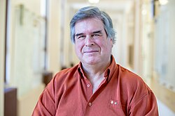

Gilles Brassard | |
|---|---|
 Gilles Brassard (2019) | |
| Born | April 20, 1955 |
| Education | |
| Known for | |
| Spouse | Lise Raymond |
| Awards |
|
| Scientific career | |
| Institutions | Université de Montréal |
| Thesis | Relativized Cryptography (1979) |
| John Hopcroft[1] | |
Doctoral students | Anne Broadbent |
| Website | Official website |
Gilles Brassard (born April 20, 1955) is a Canadian computer scientist. He is faculty member of the Université de Montréal, where he has been a Full Professor since 1988 and Canada Research Chair since 2001.[2][3] He shared the 2025 Turing Award with Charles H. Bennett for their work in quantum information science.
Brassard was born on April 20, 1955 in Montreal, Quebec, Canada.[4] He received a Ph.D. in Computer Science from Cornell University in 1979, working in the field of cryptography with John Hopcroft as his advisor.[1]
Brassard is best known for his fundamental work in quantum cryptography, quantum teleportation, quantum entanglement distillation, quantum pseudo-telepathy, and the classical simulation of quantum entanglement.[5][6][7][8][9][10][11] Some of these concepts have been implemented in the laboratory.
In 1984, together with Charles H. Bennett, he invented the BB84 protocol for quantum cryptography.[12][13] He later extended this work to include the Cascade error correction protocol, which performs efficient detection and correction of noise caused by eavesdropping on quantum cryptographic signals.
Brassard was the editor-in-chief of the Journal of Cryptology from 1991 to 1998.[11] In 2000, he won the Prix Marie-Victorin, the highest scientific award of the government of Quebec.[11][14] He was elected as a Fellow of the International Association for Cryptologic Research in 2006,[15] the first Canadian to be so honored.[11] In June 2010, he was awarded the Gerhard Herzberg Canada Gold Medal,[16] Canada's highest scientific honour.[17] Brassard was elected a Fellow of the Royal Society of Canada[11] and the Royal Society of London (2013).[18] His nomination reads:
Gilles Brassard is one of the earliest pioneers of quantum information science in the world. His most celebrated breakthroughs are the invention of quantum cryptography and quantum teleportation, both universally recognized as fundamental cornerstones of the entire discipline. His other influential discoveries include privacy amplification, entanglement distillation, amplitude amplification and the first lower bound on the power of quantum computers. Through his visionary thinking and groundbreaking research, Professor Brassard has played a pivotal role in transforming the field of quantum information science from what was initially perceived to be merely a fringe pursuit into an area of vigorous and dynamic international activity.[18]
On December 30, 2013, the Governor-General of Canada, the Right Honourable David Johnston, announced that Gilles Brassard has been named as an Officer in the Order Of Canada. In 2018, he received the Wolf Prize in Physics[19] and in 2019 the BBVA Foundation Frontiers of Knowledge Award in Basic Sciences.[20] as well as the Micius Quantum Prize.
In September 2022, Brassard was awarded the Breakthrough Prize in Fundamental Physics, the world's largest science prize.[21] In 2023 he was awarded the Eduard Rhein Foundation Prize in Technology.[22]
In March 2026, Brassard was named, along with Charles Bennett, as recipient of the 2025 ACM Turing Award, for work on the foundations of quantum information science and secure communication and computing.[23]
{{cite journal}}: Cite uses deprecated parameter |citeseerx= (help)
.jpg){kind=link}